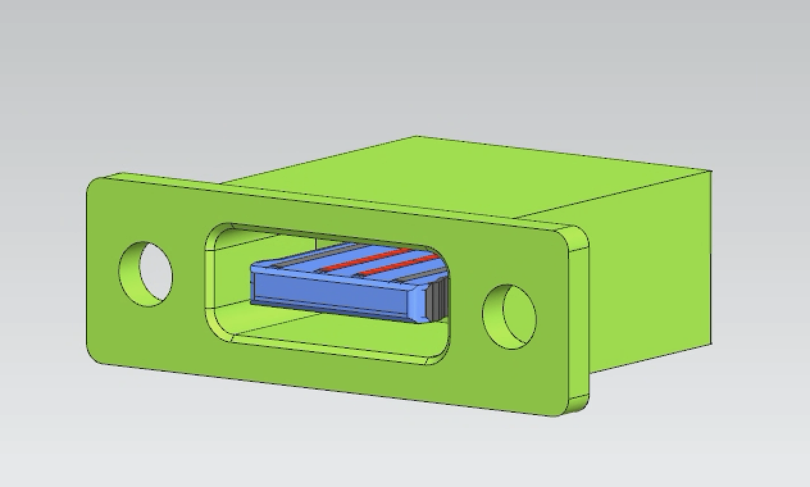
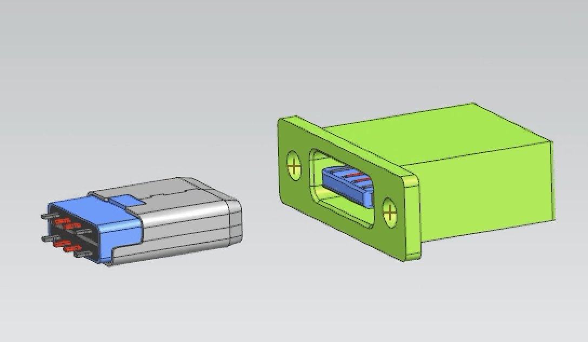
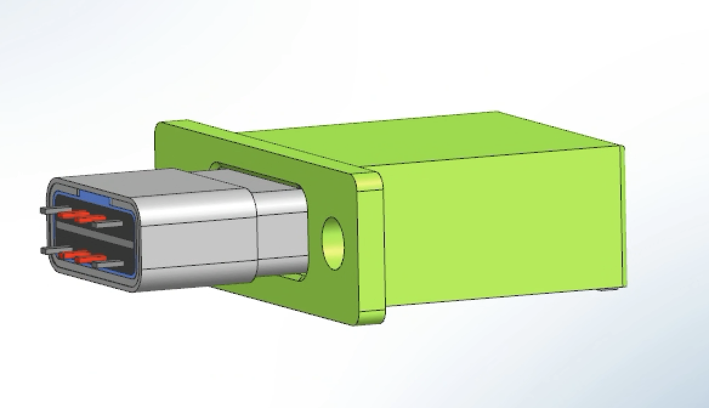

Custom Connector
Product Design / Mechanical • 2025



Overview
Designed a custom connector engineered to achieve defined retention and insertion requirements while maintaining compliance within packaging, durability, and manufacturability constraints
Problem
The most difficult part of the design was meeting the conflicting requirements of high retention force and low insertion force
Approach
- Concept exploration
- CAD modeling
- Design Review
Results & Impact
Achieved exacxly a 50 N retention force but unable to meet insertion force due to conflicting requirements
Reflection
Add latch mechanism to help with insertion force